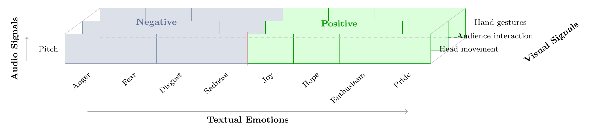
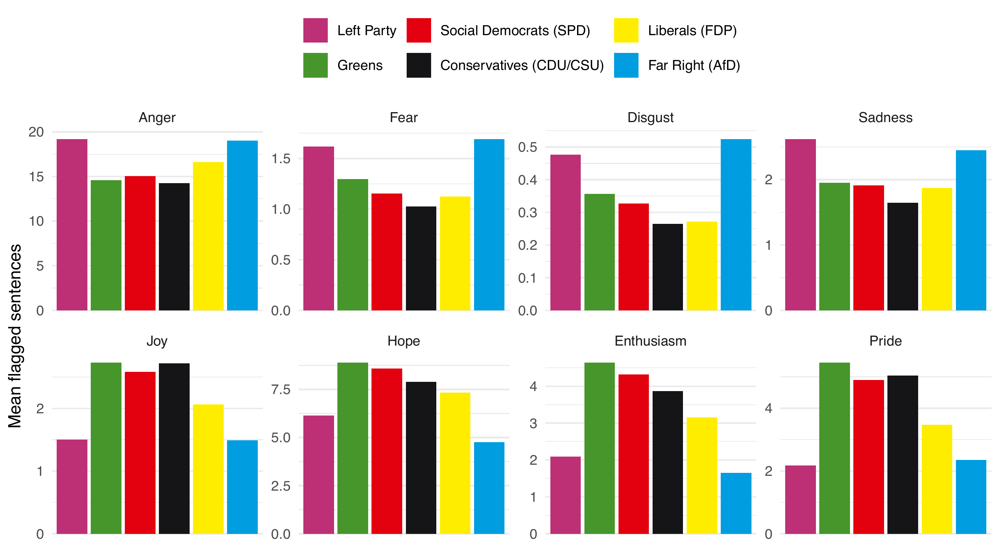
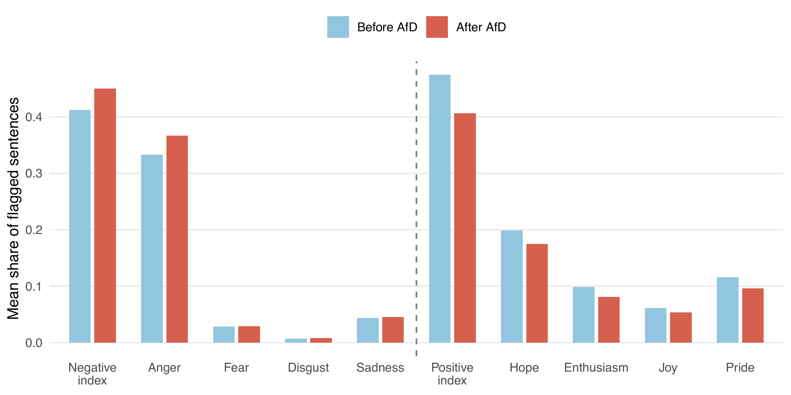
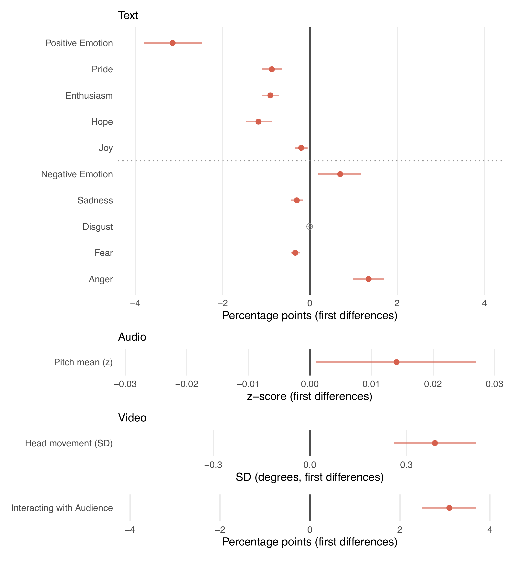
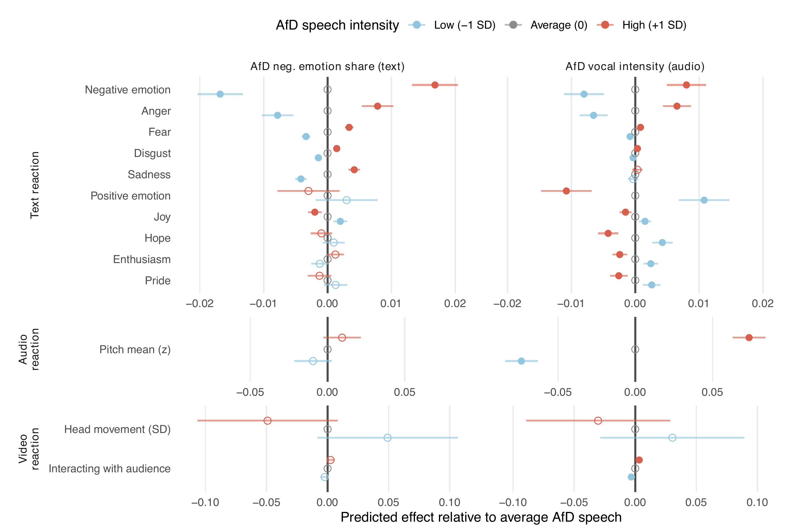
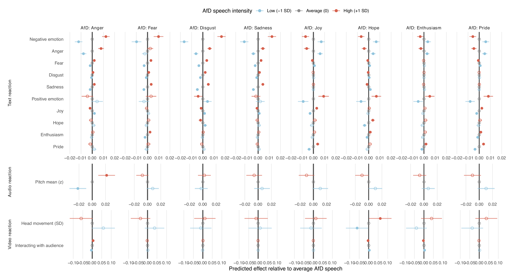

Sequential and Multimodal Evidence from Germany
University of Birmingham
TU Darmstadt
TU Darmstadt
2026-06-18
Does far-right parliamentary success make democratic debate more negative?
Valentim & Widmann (2023)
But this is an average, entry-level, text-based result
Parliamentary debate is ordered: speeches respond to prior speeches within agenda items.
Speech is not only text: legislators communicate through pitch, head movement, and gestures.
Research design
One Agenda Item
| Speech | Speech | Speech | Far Right | Speech | Speech | Speech |
| ← Before | After → |
| Before non far-right sentences |
vs. | After non far-right sentences |
Case Selection
| Parliament | Period | AfD from |
|---|---|---|
| Hesse | 2013–2025 | 2019 |
| Saxony-Anhalt | 2021–2025 | 2021 |
| Saxony | 2019–2025 | 2019 |
| Baden-Württemberg | 2011–2025 | 2016 |
| Bundestag | 2017–2025 | 2017 |
49,662 speeches · 7,615 AfD speeches · ~15,000 hours of video
Three dimensions:

H1: Average semantic distancing: non-AfD parties respond to AfD presence with more positive language (replication)

H2: Sequential mirroring: speeches after AfD interventions contain more anger and less positive language (descriptive)

H2: Sequential mirroring: speeches after AfD interventions contain more anger and less positive language (modelled)

Visual activation also rises (head movement, audience interaction); pitch is clearer once AfD vocal intensity is modelled directly →
H3: Vocally intense far right → pitch elevation (Audio); negative emotions far right → more anger in text (Text)

H4a Increased far right anger → pitch elevation; H4b Positive (negative) emotions transmit positive (negative) responses

Findings
1. Level-dependence: Average distancing and sequential mirroring coexist; they operate at different levels of analysis
2. Modality-specificity: Vocal activation follows vocal; text follows text; not a uniform contagion process
3. Emotion-specificity: Anger is the discrete emotion most tightly coupled with pitch elevation
→ Far-right presence creates repeated, localised episodes of emotion- and modality-specifc mirroring: locally intense, hard to detect in aggregate
Next Steps
Expand corpus: extend to all 16 German state parliaments and Bundestag
Expand visual layer: hand gestures not yet in models; next iteration incorporates the complete measurement matrix
Causal identification: DiD using the pre-AfD-entry period as control; shifts in the post-AfD window vs. baseline behaviour before AfD entered parliament
Far-Right Speeches and Emotional Contagion in Parliament: Sequential and Multimodal Evidence from Germany
Christian Arnold · Andreas Kuepfer · Christian Stecker
Contact:
andreaskuepfer.github.io
andreas.kuepfer@tu-darmstadt.de
ankuepfer@bsky.social
Arnold, Kuepfer, Stecker | EPSS Annual Meeting · Belfast, UK · June 2026